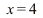
and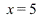
, suggesting that for generalMore differentiation
_________________________________________________________________________________
Exercise 1.1
Here are the graphs of 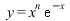 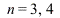 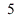
| > | plot(x^3*exp(-x),x=0..8);
plot(x^4*exp(-x),x=0..8); plot(x^5*exp(-x),x=0..8); |
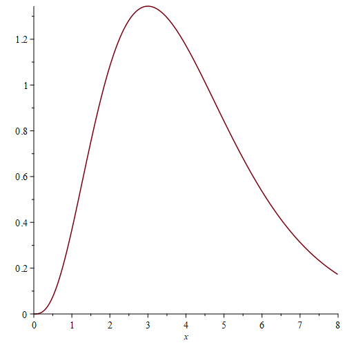 |
|
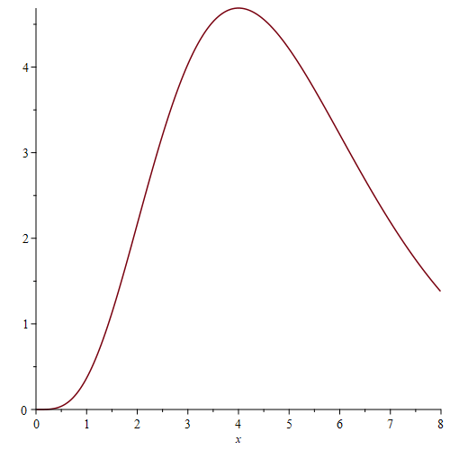 |
|
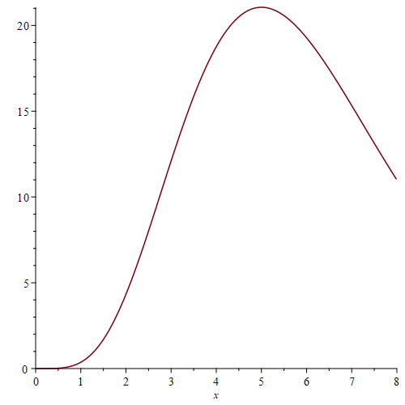 |
You can just about see that the peaks occur at   ,
, 
we should have a peak at 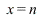 .
.
| > | y := x^n * exp(-x); |
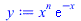 |
(1) |
| > | simplify(diff(y,x)); |
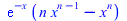 |
(2) |
| > | solve(diff(y,x)=0,{x}); |
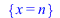 |
(3) |
This shows that the peak does indeed occur at  . To find the height of the peak, we must put
. To find the height of the peak, we must put
 in
in  :
:
| > | y[max] := subs(x=n,y); |
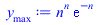 |
(4) |
It follows that 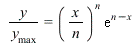 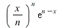 . We can plot these functions for different
. We can plot these functions for different  together as follows:
together as follows:
| > | plot([seq((x/n)^n*exp(n-x),n=1..8)],x=0..20); |
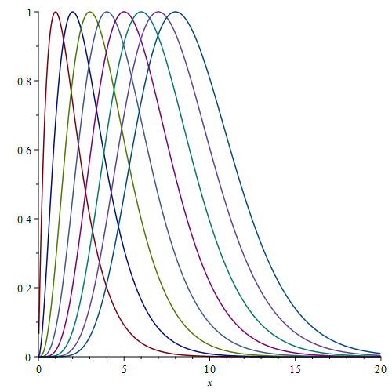 |
_________________________________________________________________________________
Exercise 1.2
| > | p := (x) -> -10*x^6+156*x^5-945*x^4+2780*x^3-4080*x^2+2880*x; |
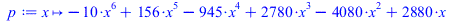 |
(5) |
| > | plot(p(x),x=0..5); |
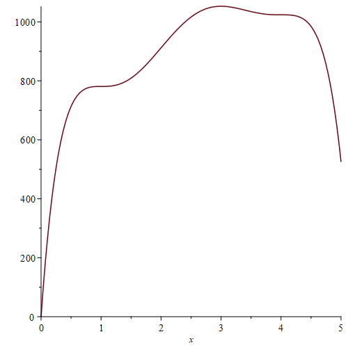 |
We see from the picture that the maximum value is about 1000, occurring at about 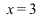
There also seem to be two inflection points, where the curve flattens out but does not
have a maximum or minimum. To check this, we solve for 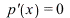
| > | p1 := diff(p(x),x); |
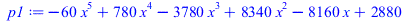 |
(6) |
| > | solve(p1=0,x); |
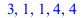 |
(7) |
This shows that the critical points are at  ,
,  and
and  . The numbers 1 and 4 are
. The numbers 1 and 4 are
repeated because they are double roots of 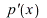 .
.
To check this, we differentiate again:
| > | p2 := diff(p(x),x,x); |
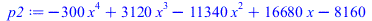 |
(8) |
| > | subs(x=1,p2); |
| (9) |
| > | subs(x=3,p2); |
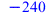 |
(10) |
| > | subs(x=4,p2); |
| (11) |
As 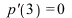 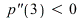 is a local maximum; by looking at the graph we
is a local maximum; by looking at the graph we
see that it is a global maximum. The maximum value of 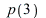 is thus given by
is thus given by
| > | p(3); |
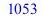 |
(12) |
The values of 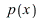
| > | p(1),p(4); |
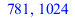 |
(13) |
_________________________________________________________________________________
Exercise 2.1
| > | restart; |
| > | u := x*sin(x^2+y^2)-y*cos(x^2+y^2); |
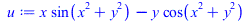 |
(14) |
| > | with(plots): |
| > | implicitplot(u=0,x=-5..5,y=-5..5,grid=[100,100]); |
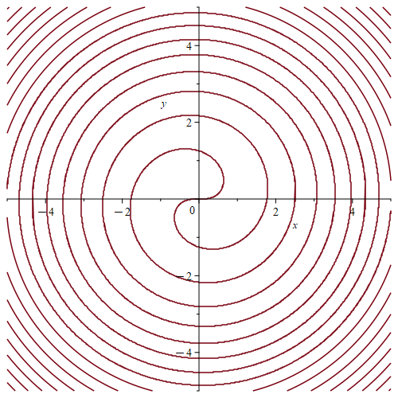 |
| > | slope1 := implicitdiff(u=0,y,x); |
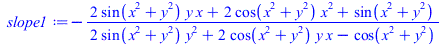 |
(15) |
The answer can be rewritten more nicely using the original relation
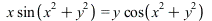
which allows us to rewrite 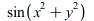 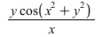
the cos terms.
| > | subs(sin(x^2+y^2) = (y/x)*cos(x^2+y^2),slope1); |
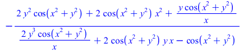 |
(16) |
| > | simplify(%); |
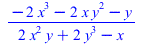 |
(17) |
| > | slope1 := %; |
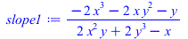 |
(18) |
We now write the curve parametrically in terms of  :
:
| > | xt := t * cos(t^2); yt := t * sin(t^2); |
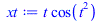 |
|
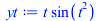 |
(19) |
To check that this really is the same curve as before, we put 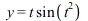 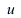 and
and
| > | subs(x=xt,y=yt,u); |
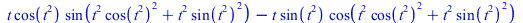 |
(20) |
| > | simplify(subs(x=xt,y=yt,u)); |
| (21) |
We can also check graphically:
| > | plot([xt,yt,t=-5..5]); |
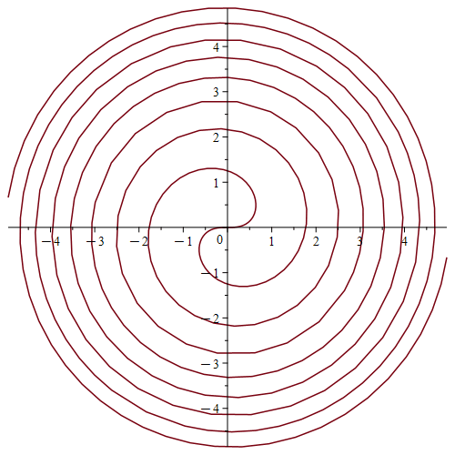 |
We now calculate  again from the parametric representation:
again from the parametric representation:
| > | diff(xt,t); |
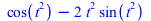 |
(22) |
| > | diff(yt,t); |
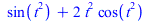 |
(23) |
| > | slope2 := diff(yt,t)/diff(xt,t); |
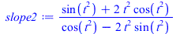 |
(24) |
This should be the same as what we get by putting 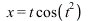 in our earlier answer:
in our earlier answer:
| > | simplify(subs(x=xt,y=yt,slope1)); |
| (25) |
_________________________________________________________________________________
Exercise 2.2
| > | restart; |
We start by entering the definitions given in the question:
| > | u := (x^2+y^2)^2 + 85*(x^2+y^2) - 500 + 18*x*(3*y^2-x^2); |
| (26) |
| > | xt := 6*cos(t) + 8*cos(t)^2 - 4;
yt := 2*sin(t)*(3-4*cos(t)); |
| (27) |
We now plot the curve and the curve given parametrically in terms of  :
:
| > | with(plots): |
| > | implicitplot(u=0,x=-10..10,y=-10..10,grid=[100,100]); |
| > | plot([xt,yt,t=0..2*Pi]); |
The curves certainly look the same. This can be tested as follows:
| > | simplify(subs(x=xt,y=yt,u)); |
| (28) |
We next find  by implicit differentiation:
by implicit differentiation:
| > | slope1 := simplify(implicitdiff(u=0,y,x)); |
| (29) |
Alternatively, we can find  from the parametric representation:
from the parametric representation:
| > | slope2 := simplify(diff(yt,t)/diff(xt,t)); |
| (30) |
This is the same as what we get by rewriting in terms of  :
:
| > | simplify(subs(x=xt,y=yt,slope1)); |
| (31) |
_________________________________________________________________________________
Exercise 3.1
| > | r := (n) -> diff(x^n*ln(x)/n!,x$n); |
| (32) |
| > | seq(r(n),n=1..10); |
| (33) |
| > | seq(r(n)-r(n-1),n=2..10); |
| (34) |
We see from this that . We start with , and then
and so on. In general, we have
Maple knows about a constant called (Euler's constant, approximately 0.577) and a special
function called with the property that for any positive integer  .
.
(You can enter ?Psi to find out more.) Using this, we could also write
We can check this as follows:
| > | seq(r(n),n=1..8); |
| (35) |
| > | seq(ln(x)+Psi(n+1)+gamma,n=1..8); |
| (36) |
| > | unassign('r'); |
We can prove that the formula is valid by induction, but we will not give the details here.
_________________________________________________________________________________
Exercise 3.2
| > | y := t^2*exp(t); |
| (37) |
| > | z := simplify(
diff(y,t,t,t) + a * diff(y,t,t) + b * diff(y,t) + c *y ); |
| > |
| (38) |
We want this to be zero for all  , so the coefficients of the individual powers of must all be
, so the coefficients of the individual powers of must all be
zero. To find these coefficients, we use the collect function:
| > | collect(z,t); |
| (39) |
We must therefore find and  such that
such that

| > | solve({1+a+b+c=0,6+4*a+2*b=0,6+2*a=0},{a,b,c}); |
| (40) |
The conclusion is that
You might think that we could do this more quickly by just solving . This does not work,
because it does not capture the fact that  and are supposed to be constants. Maple
and are supposed to be constants. Maple
gives us the following answer, in which  and
and  can be anything, but
can be anything, but  depends on
depends on  :
:
| > | solve(z=0,{a,b,c}); |
| (41) |
A correct approach along these lines is to replace the equation z=0 by the expression identity(z=0,t) to indicate that the equation is supposed to hold for all  .
.
This is probably the best approach, if you can remember the syntax.
| > | solve(identity(z=0,t),{a,b,c}); |
| (42) |
| > |
_________________________________________________________________________________
Exercise 3.3
| > | p := (n) -> sort(expand(exp(x^2)*diff(exp(-x^2),x$n))); |
| (43) |
| > | p(2); |
| (44) |
| > | p(3); |
| (45) |
| > | p(4); |
| (46) |
| > | seq(print(p(n)),n=1..10); |
| (47) |
We first look at the leading term of  . The leading term of is , the leading term of is , the leading term of
. The leading term of is , the leading term of is , the leading term of  is and so on. The signs alternate, the constant is , and the power of
is and so on. The signs alternate, the constant is , and the power of  is . More succinctly, the leading term in
is . More succinctly, the leading term in  is .
is .
Next, note that when  is even we only get even powers of
is even we only get even powers of  , and when
, and when  is odd we only get odd powers of
is odd we only get odd powers of  . For example, involves only and
. For example, involves only and  , whereas involves and (and a constant term, which we can think of as a multiple of ).
, whereas involves and (and a constant term, which we can think of as a multiple of ).
Now look at the last term in  . When
. When  is even, the last term is a constant, but when
is even, the last term is a constant, but when  is odd, it is a multiple of
is odd, it is a multiple of  . It is best to consider these separately, starting with the even case, where we may write .
. It is best to consider these separately, starting with the even case, where we may write .
| > | seq(print(p(2*m)),m=1..6); |
| (48) |
We see that the last term is times a constant, with the sequence of constants being and so on. If we enter this in the Online Encyclopedia of Integer Sequences we get an answer including the line
Name: Quadruple factorial numbers: (2n)!/n!.
We need to be a little careful with this formula. The encyclopedia assumes that the numbers we entered
correspond to and gives the formula . In fact our numbers correspond to (where  ) so the right formula for the constant term in is .
) so the right formula for the constant term in is .
Of course this kind of experimental approach does not really prove that the formula is correct, but it is very suggestive.
We now look at the case where  is odd, say :
is odd, say :
| > | seq(print(p(2*m-1)),m=1..5); |
| (49) |
The final terms are the same as before, but multiplied by  . In other words, the last term in
. In other words, the last term in
is .
We can now predict that should start with , and that it should contain multiples of and a constant term. This is the case where  and , so the constant term is . We check this as follows:
and , so the constant term is . We check this as follows:
| > | p(12); |
| (50) |
We now compare  with the Hermite polynomial , entered in Maple as simplify(HermiteH(n,x)):
with the Hermite polynomial , entered in Maple as simplify(HermiteH(n,x)):
| > | q := (n) -> simplify(HermiteH(n,x)); |
| (51) |
| > | seq(print([p(n),q(n)]),n=1..6); |
| (52) |
We see that is the same as when  is even, and the same as when
is even, and the same as when  is odd. In other words, we have .
is odd. In other words, we have .
| > |
| > |